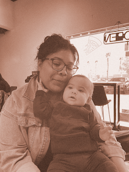

The People Who Raised Me
Created with ChatGpt

I grew up surrounded by my grandmothers, and long before I understood how rare that kind of presence was, their love shaped my childhood and became the foundation of who I am today. My Grandma Flora was part of my everyday life. She watched me while my mother worked, picked me up from school so I didn’t have to attend after-school care, and spent Sundays with my dad and me on our weekly family days. She wasn’t a traditional grandmother—she hated homemaking and loved shopping, old Westerns, and long games of Rummikub. She hosted elaborate house parties, decorated her dining room for every season, and carried herself with complete confidence. Stubborn, joyful, and unapologetically herself, she filled my childhood with laughter and taught me the importance of knowing who you are.